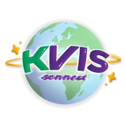

KVIS-Connect
A networking platform for Kamnoetvidya Science Academy alumni, students and staff, with an interactive 3D globe mapping alumni around the world.
TODO Add a screenshot of the alumni globe or a profile page to replace the logo above.
- Role
- Co-founder, designer & full-stack developer
- Team
- TODOteam size
- Dates
- Apr – Jul 2026
- Stack
The problem
KVIS alumni, students and staff are spread across universities and labs around the world, with no shared place to find each other or see who is researching what. KVIS-Connect gives the community one place to connect and share research interests.
What I built
TODO Your personal contributions as co-founder, designer and full-stack developer: which features, screens or services you owned, and the design work.
How it works
A Next.js front end talks to a FastAPI backend over a JSON API. The backend handles JWT and OAuth login, stores data in PostgreSQL through SQLModel with Alembic migrations, uses Redis, runs scheduled jobs with APScheduler, and sends uploads to S3. The whole stack runs in Docker.
The source code is private.
One hard problem
TODO One problem that was genuinely hard, what you tried, and how you solved it.
Results
- 169registered users in the first month
TODO Any other outcomes: engagement, feedback from alumni, or the KVIS Homecoming 2026 presentation.
What's next
TODO What you'd build or improve next.